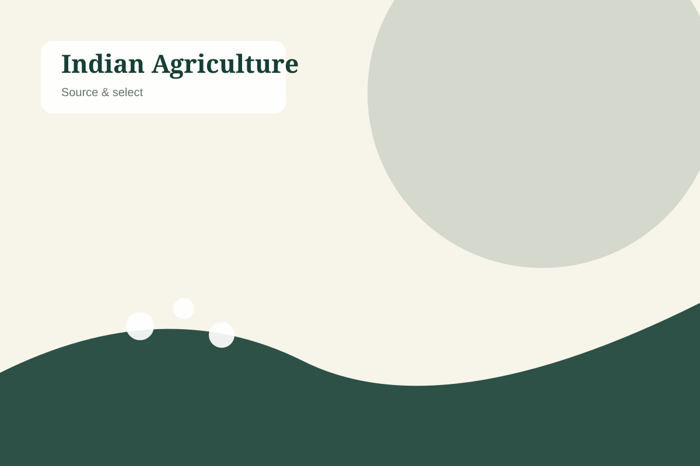

Indian Agricultural Products • International Trade
Premium Indian Agriculture.
Global Connections.
SW Global Trade connects international buyers with carefully sourced Indian agricultural products, with a focus on quality, reliability and long-term business relationships.
Our Range
Products rooted in India
Carefully presented agricultural categories for buyers seeking clear communication, agreed specifications and dependable trade coordination.

Turmeric
Vibrant colour, distinctive aroma and versatile food and processing applications.
View Product →

Garlic
Fresh product suitable for food applications and agreed sourcing specifications.
View Product →
Green Chilli
Fresh agricultural produce coordinated with destination and buyer requirements.
View Product →


About SW Global Trade
Connecting India's Agricultural Strength with the World
SW Global Trade is an India-based agricultural trading and export business focused on connecting international buyers with carefully sourced Indian agricultural products. Our approach is built around understanding buyer requirements, aligning product expectations, coordinating sourcing and maintaining clear communication through the trade process.
We believe lasting international business is built on trust, responsiveness and transparent coordination—not on exaggerated claims.
Discover Our StoryWhy SW Global Trade
A practical approach to global sourcing
Professional service designed around the needs of B2B buyers.
Quality-Focused Sourcing
Product selection is approached around agreed buyer requirements.
Consistent Product Standards
Clear alignment on specifications helps create better trade outcomes.
Export-Oriented Approach
Order preparation and coordination are structured for international trade.
Transparent Communication
We aim to keep requirements, expectations and next steps clear.
Buyer-Centric Service
Inquiries are discussed with attention to product, quantity and destination needs.
Long-Term Relationships
We value professional partnerships built through dependable communication.
From India to Buyers
India to Global Markets
A simple, transparent view of how we approach agricultural trade coordination.
Quality Commitment
Quality Is at the Heart of Every Shipment
Products can be evaluated according to applicable buyer specifications and agreed quality requirements. Packaging, documentation and shipment coordination can be aligned with the order and destination needs.
Looking for Reliable Indian Agricultural Products?
Tell us what you are looking for and let's discuss your sourcing requirements.
Request a Quote Contact Us